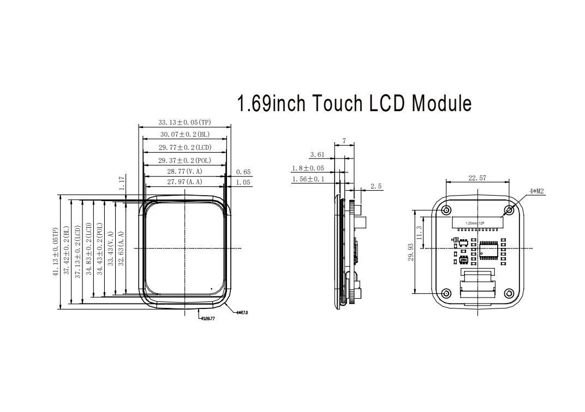
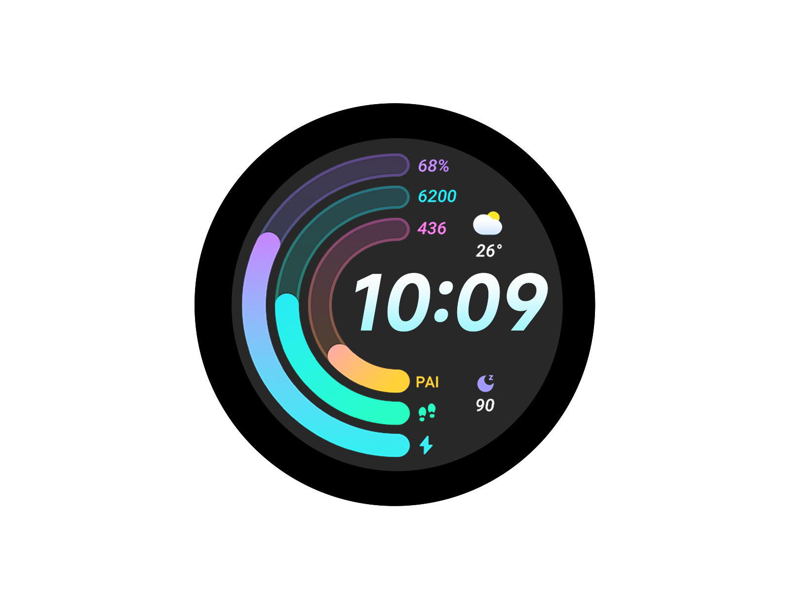
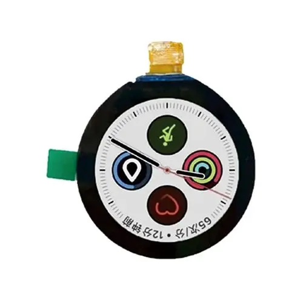

建议带P1方屏核心板与P2圆屏双处理器两套主方案。P3作为裸屏产品化方向，P4作为现成开发板工程样机。尺寸包含真实器件平面输入与明确设计预留，所有未知完整厚度继续标注。
主控尚未选定：Core只是有尺寸的备选参考。RV1106B供应商板到手后重新计算。电池#2011仅作2000mAh真实包络参考，官方缺货；4G/天线/声腔、散热与曲面容纳性尚未闭环。
P1 · 讨论提案方屏 · 核心板
61.49 × 38.00 × 99.49W×D×H / mm
包络正投影；圆角仅示意。载板与电池投影重叠代表前后分层，尚未完成三维干涉验证。

1.69inch Touch LCD Module
Core30×30×5.50；载板42×55×10为待设计占位。SPI显示/I2C触控仍需适配。
深度截面预算 36.00 mm
提案未分配余量 2.00 mm
前脸单高轴下限 74.63 mm
P2 · 讨论提案圆屏 · 双处理器
67.96 × 42.00 × 109.96W×D×H / mm
包络正投影；圆角仅示意。载板与电池投影重叠代表前后分层，尚未完成三维干涉验证。

ESP32-S3-Touch-LCD-1.85
55×55真实整板；T暂占13，不是厂家厚度。ESP负责UI，RV负责视觉；协议待开发。
深度截面预算 39.50 mm
提案未分配余量 2.50 mm
前脸单高轴下限 88.50 mm
P3 · 讨论提案裸圆屏 · 产品化
56.63 × 35.00 × 91.63W×D×H / mm
包络正投影；圆角仅示意。载板与电池投影重叠代表前后分层，尚未完成三维干涉验证。

ND018TCM360360-A01
屏厚1.96已公开；此路线深度由24mm相机安装占位主导。QSPI/FPC/电压未闭环。
深度截面预算 31.30 mm
提案未分配余量 3.70 mm
前脸单高轴下限 83.09 mm
P4 · 讨论提案开发平台 · 非产品尺寸
84.14 × 52.00 × 136.14W×D×H / mm
包络正投影；圆角仅示意。载板与电池投影重叠代表前后分层，尚未完成三维干涉验证。
Pico Max + 1.69inch Touch LCD Module
21×72真实板框，含插线T暂占25。52mm深度保留同截面电池预算；连接器超预算需扩大。
深度截面预算 51.00 mm
提案未分配余量 1.00 mm
前脸单高轴下限 74.63 mm